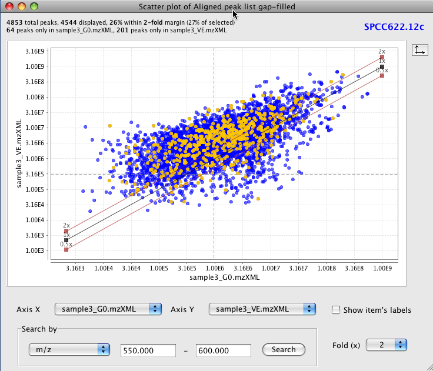
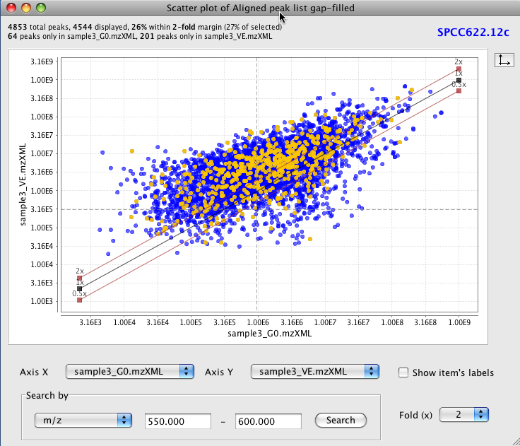

This tool shows a scatter plot with data from identified peaks in at least two or more data files.
To zoom in, drag the mouse from left to right, selecting the area to zoom. To zoom out drag the zoom from right to left.
At the top of the window appears information about the number of displayed peaks (found information in the two selected peak lists). At the bottom of the window, there are combo box where the user can choose two peak lists to compare, one per axis.
The tool tip shows the chromatographic information of the peak from all the raw data files in the peak list. the user can use the right click menu and select the option "Show chromatogram" to display a TIC plot of the selected peak. Please refer to "Visualization - TIC plot" section of this help.
A search for a peak can be done using three options (name, retention time and m/z value). There is a check box to switch on/off display labels from matched peaks to the search parameter.
 
